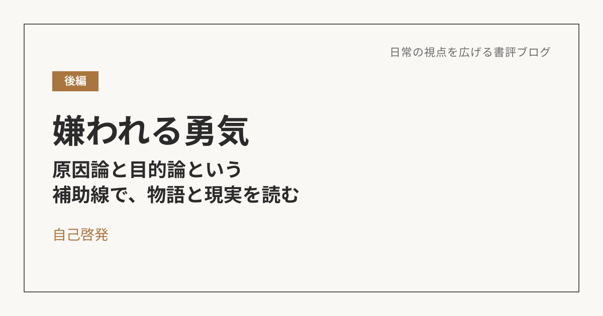

嫌われる勇気（後編）――原因論と目的論という補助線で、物語と現実を読み解く
導入
前編では『嫌われる勇気』を、自分の人生に引きつけて読んだ。後編では、そこで得た「原因論」と「目的論」というレンズを使って、いくつかの物語や、実際に起きた出来事を読み解いてみたい。
物語の中の「不自由な目的論」
原因論と目的論は、単純に「過去にとらわれているか、未来を見ているか」という二択では割り切れない。厄介なのは、一見すると目的を持っているように見えて、実際には過去に支配されている「不自由な目的論」というパターンがあることだ。
漫画『HUNTER×HUNTER』のクラピカは、一族を殺された過去（原因）を晴らすために、幻影旅団への復讐（目的）を掲げて生きている。表面的には目的を持っているように見える。でも、その目的自体が過去の出来事にそのままスライドしただけで、自分の意思で選んでいるようでいて、実際には過去という亡霊に行動を決定させられている。人生のすべてを相手（幻影旅団）に依存させていて、相手がいなくなれば自分の存在意義まで消えてしまう危うさを抱えている。
小説『爆弾』に出てくる、社会への復讐を計画する人物たちも構造は同じだ。辛い境遇という原因への執着を、そのまま社会への復讐という目的にスライドさせている。
過去を「命令」にするか、「資源」にするか
同じように過去の出来事に影響を受けていても、まったく違う道を歩む人もいる。
レオリオは、友人の死という過去があったからこそ、医者になるという目標を選んだ。一見、これも過去に決定された「原因論」に見えるかもしれない。でも彼は、過去を「命令」ではなく「資源」として扱っている。「友人が死んだ」という事実を材料にして、「だから自分は医者になって人を救う」という答えを、自分の意思で選び取っている。過去に背中を押されてはいても、行き先を決めたのは自分自身だ。変えられない過去を、自分の意志で意味づけし直すことに成功している。
『爆弾』の犯人たちとレオリオの違いも、ここにある気がする。フランクルが強制収容所という極限状況の中でも、復讐や恨みではなく、そこに意味を見出しながら生き抜いたように、同じ「辛い過去」という原因を持っていても、それを命令として生きるか、資源として使うかで、行き先はまったく変わってくる。
「自由な目的論」への移行に必要なもの
過去に縛られていた人物が、そこから抜け出していく瞬間も、物語にはよく描かれている。
キルアは、暗殺者一家の命令（イルミの針）によって、長く行動を制限されてきた。それが変わったのは、ゴンという「無条件に自分を受け入れてくれる存在」に出会ってからだ。自ら針を抜き、暗殺者としての過去を断ち切り、「ゴンを守る」「自分の道を探す」という自分の目的を選び直した。
ジンとゴンの親子関係も象徴的だ。「父親がいない」という原因を嘆くのではなく、「親父を探す過程を楽しむ」という目的を、生まれつきのように選んでいる。上下関係ではなく対等な関係で結ばれているのも特徴的だ。
彼らに共通しているのは、「他人」の存在だ。過去から抜け出すきっかけは、正論やアドバイスではなく、安心して身を委ねられる相手との出会いだったように見える。心理的な「安全基地」がまずあって、そこから初めて人は変化に踏み出せるんだと思う。
現実の事件から考える
ここまでは物語の話だったけれど、これは現実の出来事にもそのまま当てはまる気がする。
以前、実際に起きたストーカー殺人事件のニュースを見て、色々と考えさせられたことがあった。その加害者は、まさに「不自由な目的論」のど真ん中にいる人だと感じた。ある女性への執着が凄まじく、目的としては一貫しているように見えて、その実、過去（フラれたという事実）にハンドルを握られてしまっている状態だ。
普通の失恋なら、「自分の直せる部分を直そう」「相性が合わなかっただけだ」と割り切れる。でも、それができない人は、「自分が振られたという事実」を突きつけられ続け、「これはすべて相手が悪いんだ」というふうに、怒りの矛先を自分ではなく相手に向けてしまう。それが行き過ぎると、取り返しのつかない行動にまで発展してしまう。
じゃあ、そうなってしまう前に何かできることはないのか。物語の中で過去から抜け出せた人たちに共通していたのが「安心できる居場所」だったことを踏まえると、現実でも同じことが言えるんだと思う。「自立とは、依存しなくなることではなく、依存先を増やすことである」という言葉があるけれど、まさにその通りで、一本のロープ（たった一つの依存先）に全体重を預けている状態は危うい。仕事、趣味、友人、家族――細いロープを何本も持っていれば、そのうちの一本が切れても、地面まで落ちずに済む。
締め
目的論というと、つい「大きな目標を持たなければいけない」というプレッシャーのように聞こえてしまう。でも、ここまで振り返って思うのは、目的論とは大きなゴールを掲げることだけを指すのではなく、「今、この瞬間、自分がどちらにハンドルを向けるか」という、もっと小さな選択の積み重ねなんだということだ。物語の中の人物も、現実の出来事も、行き着く先は同じところにある気がする。
※本記事はNotionに書き溜めた読書メモをもとに、AIの編集サポートを受けて構成しています。